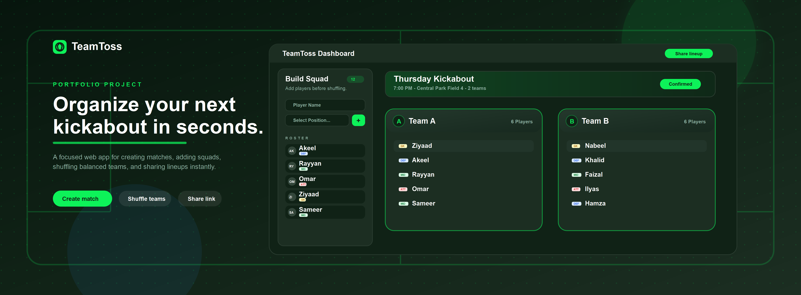

Farhaan Beeharry
Software Engineer
© 2026 All rights reserved.

TeamToss
TeamToss is a football match organization web app built
to make casual games easier to plan, balance, and share.
Instead of coordinating player lists and team selection
manually in group chats, organizers can create a match,
add players, assign positions, generate balanced teams,
and send the lineup through a simple share link.
The project focuses on a fast organizer workflow. Users can create upcoming matches with date, time, location, and the number of teams required. Each match includes a squad builder where players can be added with football positions such as goalkeeper, defender, midfielder, and attacker.
Once enough players are available, TeamToss shuffles the roster into teams while taking player positions into account. This helps create fairer matchups and removes the usual back-and-forth of deciding teams before the game starts.
Key features include:
The app includes authentication-backed match management for organizers, while shared links allow players to view the latest teams without logging in. This keeps the organizer tools private while making the final lineup easy to distribute.
On the interface side, TeamToss uses a football-inspired visual direction with a dark pitch-like background, high-contrast green actions, rounded dashboard panels, position badges, and compact team cards optimized for scanning before a match.
Tech stack: HTML, Tailwind CSS, JavaScript, Supabase Authentication, Supabase database queries, and responsive web UI patterns.
TeamToss is a practical example of a focused web product that solves a familiar coordination problem with a clean workflow: create the match, add the squad, shuffle the teams, and share the result.
Live website: https://teamtoss.farhaan.info/
The project focuses on a fast organizer workflow. Users can create upcoming matches with date, time, location, and the number of teams required. Each match includes a squad builder where players can be added with football positions such as goalkeeper, defender, midfielder, and attacker.
Once enough players are available, TeamToss shuffles the roster into teams while taking player positions into account. This helps create fairer matchups and removes the usual back-and-forth of deciding teams before the game starts.
Key features include:
- Match creation with date, time, and location
- Support for 2 to 10 teams per match
- Player roster management
- Position assignment for GK, DEF, MID, and ATT
- Automatic team shuffling and saved lineups
- Shareable match links for players
- Public shared view without requiring an account
- Responsive dark UI designed for quick use
The app includes authentication-backed match management for organizers, while shared links allow players to view the latest teams without logging in. This keeps the organizer tools private while making the final lineup easy to distribute.
On the interface side, TeamToss uses a football-inspired visual direction with a dark pitch-like background, high-contrast green actions, rounded dashboard panels, position badges, and compact team cards optimized for scanning before a match.
Tech stack: HTML, Tailwind CSS, JavaScript, Supabase Authentication, Supabase database queries, and responsive web UI patterns.
TeamToss is a practical example of a focused web product that solves a familiar coordination problem with a clean workflow: create the match, add the squad, shuffle the teams, and share the result.
Live website: https://teamtoss.farhaan.info/